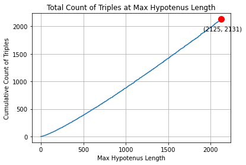

HW6 - Spell Checker#
Learning objective: Implement efficient code with generators.
Rubric & Submission#
Please note these important things:
You will submit your work to Dropbox. The link will be found on Schoology.
This will be for your High School Grade only.
You will be graded on:
Functionality
Speed/Efficiency
Class design
You will not be graded on any commenting or tests you write.
Instructions#
In this project you will learn:
Class implementation (should just be extra practice by now)
The importance of efficiency
How to do implement spelling suggestions
How to do implement a
generator
All of these things will accomplished by implementing a SpellChecker class.
Your Spell Checker program will be giving a list of words to use as its dictionary. The primary pieces of functionality will be to:
Determine if a single word is misspelled
Find all the misspelled words in an essay (text file)
Provide a set of correctly spelled words as suggested corrections
A basic infrastructure of the SpellChecker class will be provided.
Simple Spell Checking an Essay#
First, improve the code so that it can complete the spell checking quickly.
You will implement the following three methods in the class SpellChecker:
__init__(self, dictionary_name): Takes the name of a dictionary and intializes a SpellChecker object.misspelled(self, word): An instance method that returns True if the word is not found in the dictionary. (i.e. misspelled)spell_check(self, file_name, suggest=False): An instance method that returns a list ofWordInfoobjects for each misspelled word found in the essay. You will have an optional argumentsuggestthat is defaulted to False. If True, the spell check will return suggestions for correctly spelled words. In this first Simple implementation, you won’t implement this.
You will implement main.py that will create the SpellChecker object and output the misspelled words. Below is sample output.
There are several Unit Tests that related to the above that you should pass before continuing onto the next step. Note that the speed of execution is IMPORTANT. If you are too slow, you will get marked down. You need to have FAST code!!
Also, the output printed to the console for spell_check should look close to:
civalized: line: 1 word: 3
oportunities: line: 6 word: 4
seeems: line: 15 word: 9
peopl: line: 21 word: 8
ettiquitt: line: 35 word: 1
shoudl: line: 37 word: 7
psudo-code: line: 37 word: 10
algorythm: line: 39 word: 6
Be sure you Pass the Unit Tests:
check_essay
misspelled
Tips for Passing Test#
Make sure that you have your own tests written. You will understand the input and expected output of your own tests. This will assure that things are working according to plan.
Mr. Stride will ask to see your tests first before helping you figure out why a functional Unit Test is failing.
You need to implement misspelled to work with hyphenated words. There is
a slick and easy recursive approach to this which is also very fast.
Hint: If no hyphen, solve normally. If it has hyphens, break into subwords and solve for each subword.
misspelled needs to work with hyphenated words with multiple hyphens!
Example:
word-is-good-nowis correctly spelled!
If you are not passing the speed checks, it could be several things:
Maybe Mr. Stride’s test are bad. Do other students’ tests pass?
Verify that the data structure you’re using to hold the dictionary is fast.
Generators#
Before we move onto the next phase of development, you need to learn about
generators.
In Python, a generator is a special type of function that produces a sequence
of values, one at a time, when iterated over. Generators are different from
regular functions in that they do not return all their output at once; instead,
they yield their values one at a time, which allows them to be more memory-efficient
than regular functions that return all their output at once.
Here is a simple example of a generator in Python:
def countdown(n):
while n > 0:
yield n
n -= 1
for i in countdown(5):
print(i)
This generator, countdown, yields the values 5, 4, 3, 2, and 1, one at a time, when it is iterated over. When the generator is called, it does not execute the code inside of it immediately; instead, it returns a special type of iterator called a “generator iterator”, which can be used to execute the code in the generator one step at a time.
Generators can be very useful for producing large sequences of data, because they allow you to generate the values one at a time, rather than creating a list with all the values at once, which can be very memory-intensive.
Here are a couple of YouTube videos that explain generators in Python:
These videos provide a good overview of generators, including how to create them, how to use them, and some of the benefits of using generators in your Python code.
Spelling Suggestion#
This is where the project starts to get more interesting. There are many creative ways to suggest words for a misspelled word. We will start simple and slow and then build up to AMAZING and FAST!
You will implement the following three methods as generators:
_insert_letters_remove_letters_swap_letters
Mis-misspelled#
We will start with a concept that I’ll call: mis-misspelled. The basic idea
is that we will modify the spelling of a misspelled word until
it is modified into a correctly spelled word.
For example: Let’s consider the misspelled word, aple. If we modify aple by
introducing another p into the ‘3rd’ position (after the second letter) then
we will generate the word apple which is correctly spelled!
Using this concept, we could have the following code:
def get_suggestion(self, misspelled_word):
for mis_misspelled_word in create_misspelling(misspelled_word):
if not misspelled(mis_misspelled_word):
return mis_misspelled_word
For each section below, attempt find the correct spelling for words using the generator just created.
IMPORTANT: In order to allow us to “compose” our misspellers together, we need each generate to first yield the word unchanged.
Part 1#
You will implement a create_misspelling generator, but instead of using the name ‘create_misspelling’,
we will use a more specific name that describes exactly how we are misspelling the
word. Let’s name it: _insert_letters.
Note: we prefix the name with
_because it is a private method. Also, this method is an instance method (belongs to the object).
This method will insert all the letters, a-z, into every possible
position of a given word, at the start, between each letter, and at the end.
Remember, the very first word to yield is the word unchanged.
For example, if we have the word cat, the words generated would be:
for word in self._insert_letters('cat'):
print(word)
# prints
cat
acat
bcat
ccat
dcat
...
ycat
zcat
caat
cbat
ccat
cdat
...
czat
caat
cabt
cact
cadt
...
cazt
...
cata
catb
catc
...
catz
Be sure you pass the Unit Test insert_letters.
Part 2#
Implement another generator to remove all letters, one letter at a time.
The first word the generator will yield, is the word unchanged.
The generator will be called: _remove_letters. For example:
for word in self._remove_letters('goodbye'):
print(word)
# prints
goodbye
oodbye
godbye
godbye
goobye
goodye
goodbe
goodby
Be sure you pass the Unit Test remove_letters.
Part 3#
Implement another generator to change all letters, one letter at a time.
Once again, the first word to yield is the original word, unchanged.
This will be called: _swap_letters. Note that this does NOT mean that
two letters in the word are swapped. Instead, it means that one letter is
swapped out for another. For example:
for word in self._swap_letters('ab'):
print(word)
# prints
ab
bb
cb
db
eb
fb
gb
...
yb
zb
aa
ac
ad
ae
af
ag
...
ay
az
Be sure you pass the Unit Test swap_letters.
suggest_mismisspellings#
It is time to implement the method suggest_mismisspellings. This method
should return a list of suggested words that could be the correct
spelling for the misspelled word. The list will have a maximum number
of words added to the list which is specified in the optional max argument.
def suggest_mismisspellings(self, word, max=6):
# student's implementation goes here
Composing#
Each generator above catches some type of mistake, but not all of them.
If you try all three back-to-back-to-back, you won’t catch many misspellings because some
misspelled words require ALL THREE at the SAME TIME!! For example, to
identify the correctly spelled word etiquette from ettiquitt it requires
that we delete a t, add an e, and change an i to an e. All three!!
We want to implement all 3 types composed with one another. This can be very difficult. A common approach would be to use recursion to get call combinations of the generators composed together. This is even more difficult because of the way generators work–you don’t call them, you iterate through them.
We will avoid recursion because we have a small, fixed number of generators that we want to compose. Instead, you’ll simply use nested for-loops to get all possible combinations of mismisspellings.
Note: This is why we had each generator first return the word unchanged: we want the ability to apply ONLY _insert_letters. Having our other two mismisspellers return the word unchanged allows us to write simple code to find mismisspellings when there is only one mistake.
Be sure you pass the Unit Test suggest_compose. This tests that suggest_mismisspellings correctly finds a suggestion for a misspelled word that requires all three misspellings.
Using the above code, you may want to see if you can correctly produce at least one suggestion
for each of the misspelled words in englishEssay.txt. However, this method of finding suggestions is very slow.
Note: Your code may run for as much as a full minute to find suggestions for all the misspelled words in the englishEssay.txt.
Levenshtein Distance#
There are two problems with what we’ve done so far:
It’s too slow!!
The list may contain lots of odd words
You will now implement suggest_corrections(self, word). It uses a distance algorithm and
is a much FASTER way to find a list of correctly spelled words.
We are going to change the approach to solving this suggestion problem. We will essentially go backwards. Instead of generating mis-misspelled candidates and then search the dictionary to see if it is indeed a correctly spelled word, we will compare ‘every’ word in the dictionary against the misspelled word to calculate how ‘close’ it is to our misspelled word. We will use Levenstein Distance for this.
Your method will identify the closest distance that any word is to the misspelled word. It will return a sorted list of all the words at that minimum distance from the misspelled word. It will suggest all of the ‘closests’ words and only the closest words.
For example, if the misspelled word is compewter, your code should return the suggested
list ['compester', 'competer'] because each of these is a distance of 1 away from the
misspelled word compewter. The word computer is a distance of 2 and will not be included.
To accomplish this, we need a way to measure the ‘distance’ between two words.
The Levenshtein Distance algorithm is exactly what we want. The algorithm will
provide an integer number that is essentially the count of changes made to one
word to reach the other. The changes are exactly the same three generators you
implemented above. (The algorithm will not use your generators.)
Levenshtein Distance
The Levenshtein Distance algorithm, also known as the edit distance, is a measure of the similarity between two strings. It calculates the minimum number of single-character edits (insertions, deletions, or substitutions) required to transform one string into another. The smaller the Levenshtein Distance, the more similar the strings are.
You will add a new instance method to the SpellChecker class.
# in file spell_checker.py
def suggest_corrections(self, word):
'''
Return a list of all the suggest words that share the same, minimum
distance from word using the levenshtein distance algorithm.
'''
# use levenshtein distance to find suggestions
It can take a while to understand the algorithm which can take us off topic
quite a bit. So, instead, you will search the internet to find an implementation
of the Levenshtein Distance algorithm. Add it to the file levenshtein.py. You will do this
two ways. The first way is to find the Python code on the internet. You will implement:
# This is in the file levenshtein.py
def levenshtein_distance(s1, s2):
# Find internet code to return the distance between s1 & s2
pass
Attempt to find FAST implementations. It is pretty clear that some implementations are much faster than others.
Write a few tests to verify that your implementation works.
Python Module#
After you have Python code that correctly implements Levenshtein Distance, look for a Python module that implements the same thing. Wrap up the module’s implementation in levenshtein.py in the method lev_distance.
Be sure you pass all the Unit Tests.
Final Output#
You will update main.py to run your Spell Checker with suggestions. Run spell_check on the englishEssay.txt and see how fast it finds spelling suggestions. In other words, update main.py to call spell_check(essay, True) and then print out suggestions beneath the misspelling summary as shown below.
Compare the speed of the Python implementation to the module implementation by doing a spell_check using each. Mr. Stride’s work showed that the Python implementation took 50.5 seconds and the module implementation took less than 2.5 seconds. Amazing, right?!
Dictionary: data/wordList.txt
Essay to check: data/englishEssay.txt
Time to spellcheck: 3.012
civalized: line: 1 word: 3
oportunities: line: 6 word: 4
seeems: line: 15 word: 9
peopl: line: 21 word: 8
ettiquitt: line: 35 word: 1
shoudl: line: 37 word: 7
psudo-code: line: 37 word: 10
algorythm: line: 39 word: 6
Suggested Corrections:
civalized --> ['civilized']
oportunities --> ['opportunities']
seeems --> ['seems']
peopl --> ['people']
ettiquitt --> ['antiquist', 'antiquity', 'etiquet', 'etiquette']
shoudl --> ['dhoul', 'ghoul', 'seoul', 'shaul', 'shoad', 'shoal', 'shod', 'shoddy', 'shode', 'shoed', 'shoful', 'shonde', 'shood', 'shool', 'shorl', 'shou', 'shough', 'should', 'shouldn', 'shouse', 'shout', 'shouts', 'shoval', 'shovel', 'showd', 'shroud', 'shrouds', 'shroudy', 'shul', 'soud', 'soul']
psudo-code --> ['pseudo-code', 'psuedo-code']
algorythm --> ['algorithm']
Challenge Question#
This challenge question is a bit different than previous questions. Here, you’ll be asked to do some Data Science research. The goal is to provide visual insight into a mathematical solution space. Does this sound a bit strange? Let me elaborate.
You will have to:
Learn some Math theory – how to generate Pythagorean Triples.
Write efficient code to solve a problem quickly – I used generators, but that is not absolutely necessary.
Apply some creative analysis to imagine visually appealing & insightful graphs.
Create and annotate graphs – For reference, use: Mr. Stride’s IDP Site and/or ChatGPT
Interpret the data an draw some conclusions.
ChatGPT & Plagiarism
This challenge question deals mostly with your ability to understand new things, search the internet, write code that solves your problem, and, MOST IMPORTANTLY create visually insightful graphs.
You could turn this into an exercise to learn how much ChatGPT can do for you from the get-go. Or, you could use ChatGPT to help when you get stuck with creating specific graphs. It is up to you. It is a resource.
Keep the end goal in mind: LEARN how to provide visual INSIGHT.
There is NO possibility of being accused of plagiarism on this Challenge Question. It isn’t graded!!
Pythagorean Triples#
Before you can really begin to solve this problem, you need to learn about how to generate Pythagorean Triples. You can get a great lesson by watching this video by 3 Blue 1 Brown. You definitely should watch it!!
Related Links
You can also look at some online resources:
Wikipedia Pythagorean Triple - This can get a little overwhelming, but there are some good graphs and instuctions.
Least Hypotenuse of N Distinct Pythagorean Triangles - This is not really that helpful other than to illustrate how someone asked an interesting question and provided a table of answers. Can you think of equally interesting questions? Can you partially graph this sequence?
Coding Hints#
You’ll want to start by creating a method that generates all the fractions up to some maximum denominator. For example, here are all the fractions up through the denominator 9: \(\frac{1}{2}, \frac{1}{3}, \frac{2}{3}, \frac{1}{4}, \frac{3}{4}, \frac{1}{5}, \frac{2}{5}, \frac{3}{5}, \frac{4}{5}, \frac{1}{6}, \frac{5}{6}, \frac{1}{7}, \frac{2}{7}, \frac{3}{7}, \frac{4}{7}, \frac{5}{7}, \frac{6}{7}, \frac{1}{8}, \frac{3}{8}, \frac{5}{8}, \frac{7}{8}, \frac{1}{9}, \frac{2}{9}, \frac{4}{9}, \frac{5}{9}, \frac{7}{9}, \frac{8}{9}\)
I created a generator in Python so that I could write the following:
for a, b in gen_fractions(9):
print(a, '/', b)
Once you have the ability to generate all the fractions you need, use each fraction to generate all the Pythagorean Triples with a hypotenuse <= max_length using a specific complex number (u + vi) where u and v come from the fraction. Put this into a nested loop and, voila, you have all the Triples! I personally had some repeats that needed to be removed using an “appropriate” data structure.
The goal would be to create a function that counts the total number of Triples that have an hypotenuse <= max_length.
If done correctly, you should find that count_triples(2125) == 2131. In other words, there are 2131 unique
Pythagorean Triples that have an hypotenuse <= 2125. Calculating this should be very quick!
For efficiency, you’ll want to save the data in appropriate data structures as you generate the data. If you regenerate data for all lengths, you’ll be dog slow! For example, please do NOT do the following:
counts = []
for c in range(max_hypotenuse):
counts.append(count_triples(c))
The avoid the above code, you may have to refactor or reorganize your code in ways that allow you to save data as you go.
To help you validate your code, here is a table of the count of Triples for a specific Max Hypotenuse:
Count Max Hypotenuse
1 5
2 10
3 13
4 15
5 17
6 20
8 25
9 26
10 29
11 30
12 34
13 35
14 37
15 39
The above table says that there are 13 unique Triples whose hypotenuse is of length 35 or less.
If you struggle with creating the code to generate these values, use online resources to help. There is sooooo much more to this problem than coding a quick solution. BUT you should at least understand the code you’ve acquired, and don’t forget to annotate where you got the code.
Graphs with Insight#
The obvious graph is something like this:

There are lots of graphs you can generate to show the distribution of Triples, the growth rate, the cost to generate the count, the discovery rate of Unique Triples from each fraction, the line or parabola of best fit, how many unique Triples are found for an hypotenuse, and more!
Here are two more sample graphs that you can attempt to recreate or improve upon:


Note that the above histogram says that after generating all Triples where the hypotenuse <= 6000,
there was one hypotenuse length (5525) that had 22 unique Triples, all of which had a hypotenuse
of length 5525.
Draw some Conclusions#
What can you say about the count and distribution of Triples?
Can you accurately predict the count with a line or parabola?
Is it common to find 6 unique Triples for a singular hypotenuse? When does that first happen? What is the distribution?